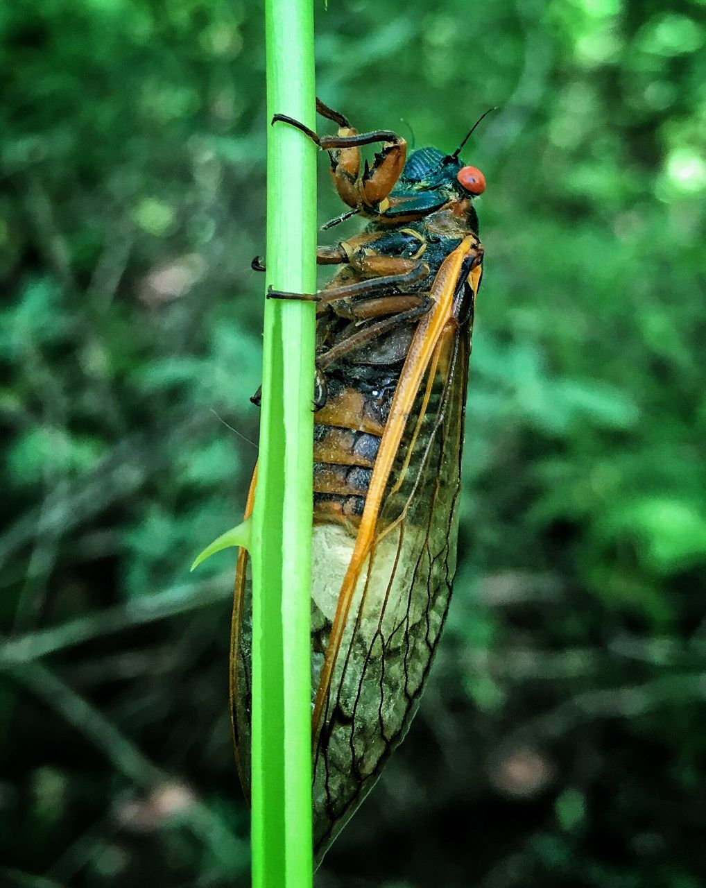
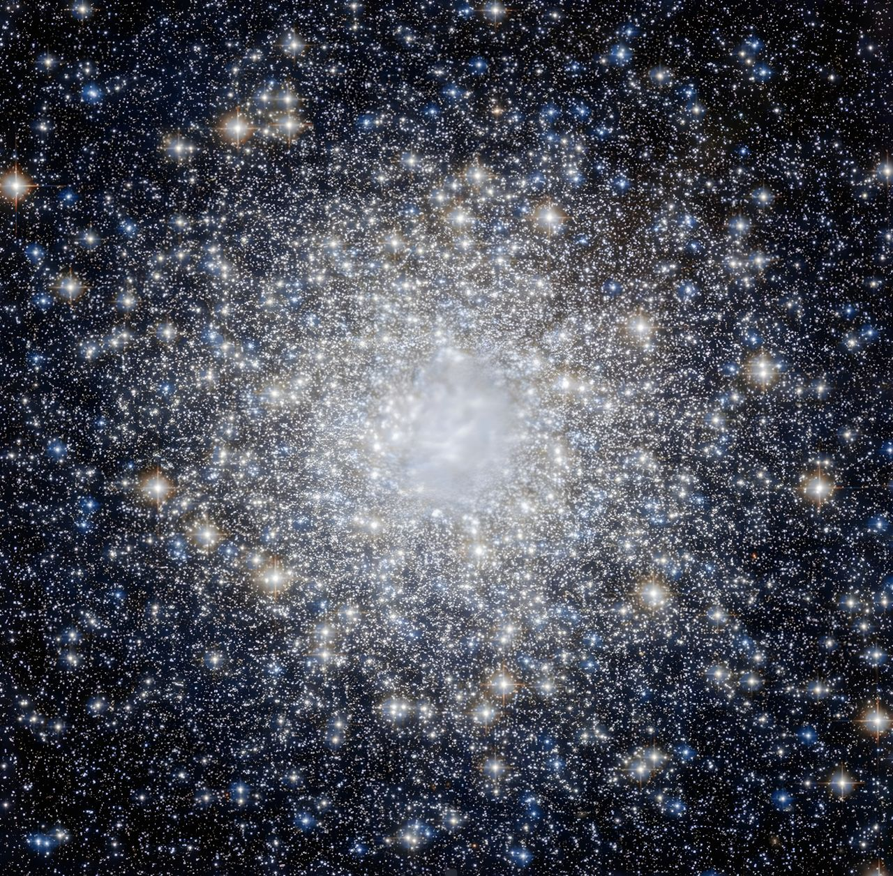
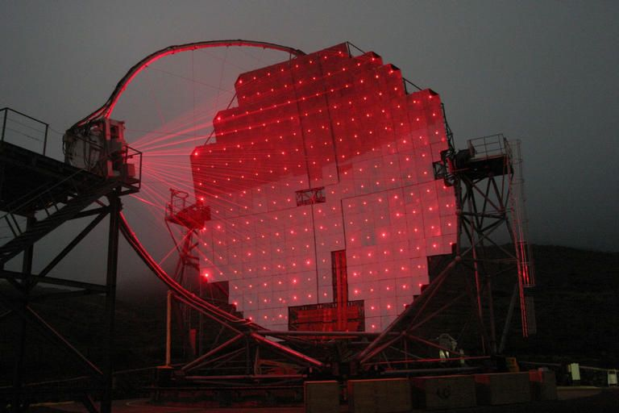
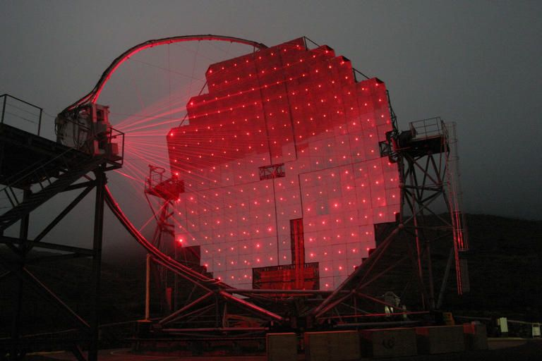
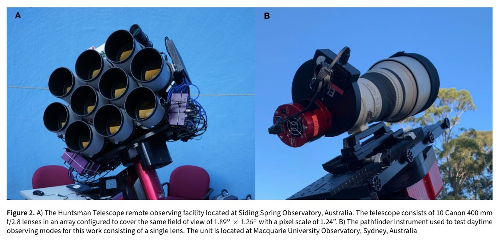
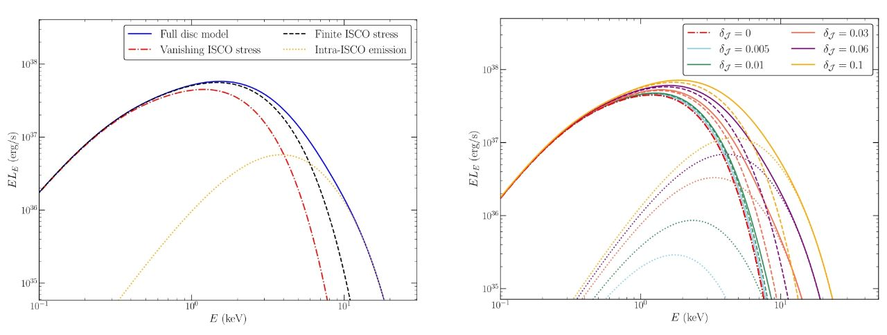

В нашем Telegram канале больше научных новостей, а также интересные обсуждения в комментариях, уважительная атмосфера общения.
29 Июня 2024


Оказалось, что 6 обнаруженных ими новых кратеров нашлись буквально недалеко от места посадки InSight. 2 события, которые они идентифицировали на основе полученных данных, были двумя крупнейшими событиями, из когда-либо обнаруженных учёными.
Даже спустя десятилетия наблюдений с орбиты - столкновения, каждое из которых оставляет кратер размером примерно с футбольное поле, произошли с интервалом всего в 97 дней, что подчеркивает более высокую частоту подобных событий. Учёные ожидали, что столкновения такого масштаба происходят примерно раз в пару десятилетий, но обнаружили 2 из них - разница между которыми составляет чуть более 90 дней.
Команда учёных подтвердила, что 8 из этих событий привели к появлению свежих кратеров, изучив орбитальные снимки до и после этих событий. Этот двойной подход с использованием сейсмических данных и орбитальных снимков позволил им подтвердить, что сейсмические сигналы были вызваны именно ударами метеороидов и перепроверить свои выводы для обеспечения точности.
Следующие шаги этой научной группы направлены на проведение более детального орбитального поиска при помощи методов машинного обучения. Но пока выводы таковы, что подобные события происходят до 10ти раз чаще чем предполагалось ранее, что ставит под угрозу будущие программы пилотируемых полётов на Марс и создания там небольших обитаемых баз.
28 Июня 2024
Благодаря этой разработке космонавты смогут путешествовать с компактной средой обитания, построенной из легкого материала, но содержащего "спящие" грибы. При добавлении воды мицелий грибов прорастёт вокруг и внутри этой структуры в полностью герметичное, безопасное и функциональное жилище для человека.
В подтверждение концепции проекта ранее уже был продемонстрирован материал созданный по этой технологии. Команда учёных создала множество комбинаций биокомпозитов на основе грибов, протестировала материалы в планетарном симуляторе, продемонстрировала радиационную защиту, и разработала подробный проект для лунной среды обитания на основе мицелия грибов.
Этот проект может также найти применение для строительства на Земле. А также мицелий можно использовать для фильтрации воды и в системах извлекающих полезные для промышленности и сельского хозяйства минералы из сточных вод.
Проект уже переходит во вторую фазу своего развития. Третья фаза будет заключаться, в том числе, и в тестировании этой технологии на околоземной орбите.
26 Июня 2024
Десятилетия последующих исследований и анализа установили, что механизм датируется вторым веком до нашей эры и функционировал как механический компьютер. Внешние циферблаты соединенные с внутренними шестернями позволяли предсказывать затмения и вычислять астрономические положения планет на любую заданную дату с точностью несравнимой ни с одним другим известным современным устройством.
В 2020 году рентгеновские снимки одного из календарных колец механизма выявили равномерно расположенные отверстия находящиеся под этим кольцом. Однако, поскольку кольцо было разломано и части его были утеряны, было неясно сколько отверстий там было изначально. Первоначальный анализ, проведенный учёными, предположил, что их там было от 347ми до 367ми.
Профессор Грэм Воан из факультета физики и астрономии Университета Глазго использовал байесовский анализ, который использует вероятность для количественной оценки неопределенности на основе неполных данных, чтобы вычислить вероятное количество отверстий в механизме, используя положения сохранившихся отверстий и размещение шести сохранившихся фрагментов кольца. Его результаты показали убедительные доказательства того, что календарное кольцо механизма содержало либо 354, либо 355 отверстий.
В то же время один из его знакомых по Университету - доктор Джозеф Бейли также узнал об этой проблеме. Он адаптировал методы, используемые их исследовательской группой для анализа сигналов полученных детекторами гравитационных волн LIGO, которые измеряют рябь в пространстве-времени вызванную слиянием чёрных дыр и нейтронных звёзд, для тщательного изучения календарного кольца.
В результате Воан и Бейли предоставили полный вероятностный набор результатов расчётов указывающий на то, что кольцо содержало 354 или 355 отверстий по окружности радиусом 77,1 мм с погрешностью около 1/3 мм. Это также показало, что отверстия были расположены с необычайной точностью - со средним радиальным отклонением всего 0,028 мм между каждым отверстием.
"Мы адаптировали методы, которые используем для изучения Вселенной сегодня, чтобы лучше понять механизм, который помогал людям следить за небесами почти два тысячелетия назад", - отметил Грэм Воан.
25 Июня 2024
Профессор Калифорнийского университета Джеймс Кеннетт и его коллеги сообщили об обнаружении её остатков, распределенных по нескольким отдельным регионам на востоке Соединенных Штатов: Нью-Джерси, Мэриленд и Южная Каролина. Они указывают на время, силу и температуру события. Были обнаружены: платина, металлические микросферы, расплавленное стекло и кварц с ударным разрушением.
"Мы обнаружили, что давление и температура не были характерны для прямых крупных кратерообразующих столкновений с поверхностью Земли, но они соответствуют воздушным взрывам, которые не образуют много кратеров", - заявляет Кеннетт.
Слой отложений связанный с выбросом в атмосферу материала от этого события простирается по большей части северного полушария, но также может быть найден в местах к югу от экватора. Этот слой содержит необычно высокие уровни редких материалов: иридий и платина, а также материалы, образовавшиеся при высоких давлениях и температурах, такие как магнитные микросферы - застывшие металлические капли, расплавленное стекло и наноалмазы.
Ученых также особенно заинтересовало наличие характерного ударного кварца, который мог образоваться только при таком событии.
24 Июня 2024
23 Июня 2024
Это важнейшее открытие последнего десятилетия, потому что наногерцовые реликтовые гравитационные волны являются аналогами реликтового микроволнового излучения. Как открытие фонового теплового излучения в 1965 году стало доказательством горячей Вселенной и Большого взрыва, так и обнаружение наногерцовых гравитационных волн прямо свидетельствует в пользу модели циклической Вселенной, в которой черные дыры играют ключевую роль.
Подробнее об этом можно узнать в свежей, весьма обширной, статье Николая Горькавого.
23 Июня 2024

НАСА сообщило, что возвращение Boeing Starliner на Землю с МКС, которое было запланировано на 26 июня, снова отложено.
НАСА заявило, что МКС хорошо снабжена припасами и "расписание станции относительно открыто до середины августа", а задержка возвращения даст больше времени для изучения неисправностей двигателей и утечки гелия.
22 Июня 2024

Проект самого быстрого, в настоящее время, космического корабля, использующего гравитационный маневр вокруг Солнца.
Разумеется, одного теплозащитного экрана недостаточно для полного достижения этого эффекта — космический корабль должен иметь двигательную установку способную выдерживать такие температуры. И он также в разработке. Двигатель будет использовать энергию излучения Солнца для повышения давления рабочего тела в расширительной камере, а затем под давлением выбрасывать это рабочее тело - для создания реактивной тяги.
В качестве рабочего тела был предложен метан. Хотя он не так эффективен - как гидрид лития, но сможет разогнать корабль до преодоления 10 астрономических единиц в год. Водород ещё более эффективен, но хранение жидкого водорода при таких высоких температурах представляется совсем уж нереальной задачей.
Проект был удостоен гранта от НАСА первой фазы в 2022 году. Но НАСА, пока, не выбрало этот проект для перехода ко второй фазе.
21 Июня 2024
НАСА объявило, что Boeing Starliner совершит посадку с людьми не ранее 26 июня - почти через три недели после запуска.
Оценка их состояния продолжается. Недавно члены наземной команды Boeing и НАСА совместно с астронавтами на МКС провели испытание двигателей их запуском. Один двигатель не сработал во время испытания из-за аномально низкого давления, и он останется отключенным во время возвращения космического корабля на Землю.
Производительность большинства двигателей хорошая и приближается к номинальной, а утечки гелия стабилизировались и уменьшились. Инженеры на Земле и астронавты в космосе работают над тем, чтобы узнать больше о проблемах корабля, пока сервисный модуль, обеспечивающий большую часть топлива и энергии космического корабля все ещё прикреплен к космическому кораблю, поскольку он будет уничтожен во время посадки.
20 Июня 2024

Цикады-зомби неистово предаются спариванию под воздействие грибов-паразитов. Локальный зомби-апокалипсис среди периодических цикад.
Периодические цикады - Magicicada - род цикад с 13- и 17-летними жизненными циклами, распространённые в восточной части Северной Америки. Эти насекомые демонстрируют уникальный пример длительного жизненного цикла, а также периодичности и массовости появления взрослых насекомых. Они также известны под названием «семнадцатилетняя саранча», но эволюционно с саранчой не связаны.Цикады-зомби неистово предаются спариванию под воздействие грибов-паразитов. Локальный зомби-апокалипсис среди периодических цикад.
Взрослые периодические цикады живут только несколько недель — до середины июля. Их недолговечность во взрослом состоянии объясняется одной целью их взрослой жизни — размножением. Самки отвечают на вызовы самцов периодическими щелчками крыльев, привлекающими самцов для спаривания. А звуки групп самцов — могут достигать 100 децибел.
Личинки периодических цикад живут под землёй, на глубине от 30 и более сантиметров, питаясь соками корней растений. Перед строительством туннеля, для выхода на поверхность весной 13-го или 17-го года своей жизни, они превращаются в нимф. Существует гипотеза, что период появления большого количества цикад раз в 13 или раз в 17 лет является частью стратегии, уменьшающей возможность стать добычей потенциальных хищников, ожидающих появление насекомых. Они их просто не дожидаются.
Однако, цикады с выпученными красными глазами издающие призывные звуки могут показаться странными и даже пугающими. Оказывается, Massospora cicadina - единственный гриб на Земле, который вырабатывает амфетамин в организме этих насекомых, берёт под контроль поведение цикад. Он делает их "гиперсексуальными", используя попытки спаривания цикад для своего распространения.
У этого гриба один из самых больших геномов среди всех известных грибов. У него около полутора миллиардов пар оснований, что примерно в 30 раз больше, чем у многих известных науке грибов. Пара оснований - это 2 азотистых основания в составе нуклеотидов - соединений ДНК и РНК.
Данный гриб-паразит заражает нижние части цикад, удаляя гениталии и заменяя их белой и клейкой, но при этом шелушащейся пробкоподобной субстанцией, из которой в последствии выпадают споры гриба. Этот гриб не относится к тому типу паразитов, которые убивают своего хозяина, вместо этого он наоборот до последнего поддерживает его жизнь. Затем зараженные цикады пытаются спариваться с другими, распространяя споры гриба. Самцы в своем "гиперсексуальном" состоянии даже притворяются самками, чтобы заманить и заразить других самцов.
В последствии зомбирующее воздействие гриба приводит к тому, что самцы пытаются "спариваться" со всем - с чем сталкиваются на пути, а затем у них постепенно отваливаются нижние конечности. А самки после заражения паразитом спариваются с незаражёнными самцами и откладывают заражённые грибом яйца. В последствии гриб медленно распространяется личинками долгие годы.
Профессор микологии Университета Западной Вирджинии Мэтт Кассон и его небольшая команда собрали 36 заражённых цикад во время своей короткой работы в поле, а также ему прислали еще около 200 особей. В данный момент он ожидает подробные результаты генетического анализа гриба, включая подробный анализ РНК, необходимый для продолжения исследования этого паразита.
19 Июня 2024
НЕОБЪЯСНИМЫЕ СИГНАЛЫ ИЗ КОСМОСА. Владимир Сурдин. Неземной подкаст.
18 Июня 2024
Событие, когда звезда приближается слишком близко к чёрной дыре и разрывается приливными эффектами, может вызвать внезапное повышение яркости галактик. Но эти изменения яркости обычно длятся всего несколько десятков или, самое большее, несколько сотен дней. SDSS1335 + 0728 до сих пор увеличивает свою яркость после того, как было впервые замечено усиление яркости в 2019 году. Сравнивая данные, полученные до и после декабря 2019 года, учёные обнаружили, что SDSS1335 + 0728 излучает уже гораздо больше в ультрафиолетовом, оптическом и инфракрасном диапазонах волн. Галактика также начала излучать рентгеновские лучи в феврале 2024 года.
"Такое поведение галактики беспрецедентно", - заявляют астрономы.
17 Июня 2024
Что так разогнало звезду, которая летит по нашей галактике со скоростью 2,1 миллиона километров в час?
Чтобы раскрыть секреты этой сверхскоростной звезды профессор астрономии и астрофизики Калифорнийского университета в Сан-Диего Адам Бургассер начал её наблюдения в инфракрасном спектре. Оказалось, что звезда принадлежит к карликам класса L. К ним относятся холодные коричневые карлики с температурами от 1300 до 2500 K. Достаточно старые звёзды с массами менее 0,085 масс Солнца также могут принадлежать к классу L.
В первой гипотезе объясняющей сверхскоростную природу объекта J1249 + 36, Бургассер и его коллеги предположили гипотезу, что он когда-то был компаньоном белого карлика. Иногда белые карлики в двойных системах могут питаться звёздным материалом содранным с ближайшей звезды, объедая её почти до голого ядра. Бывает, что материал скапливается на белом карлике до тех пор, пока масса этого звёздного остатка не превысит предел Чандрасекара - примерно в 1,4 раза превышающий массу Солнца. Это приводит к взрыву сверхновой типа Ia", который полностью уничтожает белого карлика. А его компаньон высвобождается и улетает с той орбитальной скоростью, с которой он двигался изначально, плюс толчок от взрыва сверхновой. Однако этого белого карлика уже больше нет, а остатки взрыва, который, вероятно, произошёл несколько миллионов лет назад, уже рассеялись, поэтому у учёных нет убедительных доказательств того, что эта гипотеза верна.
Вторая гипотеза предполагает, что этот объект находился в центре шарового скопления, где часто скрываются множество чёрных дыр различной массы. Эти чёрные дыры могут образовывать двойные системы. А когда звезда сталкивается с двойной чёрной дырой, сложная динамика взаимодействия трёх тел может выбросить звезду даже из шарового скопления. Научная группа Бургассера проследила траекторию этой сверхскоростной звезды до чрезвычайно перенаселённой области космоса, которая может быть местоположением пока неоткрытого шарового скопления, а возможно даже нескольких таких скоплений.
Теперь научная группа изучает элементный состав J1249 + 36. Состав может указать на происхождение объекта. Когда белые карлики становятся сверхновыми они сильно загрязняют выбрасываемые звёзды. А звёзды, рожденные в шаровых скоплениях, имеют совсем иной химический состав. Но каким бы ни было происхождение этой звезды, ее открытие дает учёным уникальную возможность исследовать сверхскоростные звезды.
Бургассер представил результаты работы научной группы на пресс-конференции 10 июня во время 244-го национального собрания Американского астрономического общества.
16 Июня 2024


Учёные подтвердили, что квантовая запутанность сохраняется даже между t-кварками - самыми тяжёлыми из известных науке частицами.
Эксперимент группы физиков под руководством профессора физики Рочестерского университета - Регины Дёминой привёл к значительному результату в вопросах исследования квантовой запутанности. Будучи ещё аспиранткой, Дёмина была в команде, которая открыла топ-кварк в 1995 году. Также Дёмина возглавляла группу учёных, которые создали устройство слежения, сыгравшее ключевую роль в открытии бозона Хиггса в 2012 году.
Для получения топ-кварков и исследования их запутанности в данном эксперименте потребовались очень высокие энергии, доступные лишь на Большом адронном коллайдере. И в результате эксперимента было впервые обнаружено, что запутанность сохраняется между t-кварками и запутанными с ними анти t-кварками на расстоянии превышающем доступность информации, передаваемой со скоростью света. В частности, учёные наблюдали спиновую корреляцию между частицами.
Данные исследования, и подобные им могут пролить свет на то - как долго сохраняется запутанность, передаётся ли она дочерним частицам или их продуктам распада, и что в конечном итоге разрушает запутанность. Вселенная находилась в запутанном состоянии после начальной стадии быстрого расширения. А результат эксперимента, наблюдаемого Дёминой и её научной группой, может помочь понять, что привело к потере квантовой связи во вселенной.
15 Июня 2024
14 Июня 2024
Команда учёных надеется найти породы, отличные от тех, что встречаются в богатом карбонатом и оливином пограничном слое, и собрать больше сведений о геологической истории этого места.
Управляющая марсоходом команда использовала снимки из космоса для планирования поездок на расстояние около 30 метров за одну поездку. Чтобы продвинуться дальше за один марсианский день они полагались на автоматическую навигационную систему Perseverance - AutoNav. Но по мере того, как валунов и камней становилось все больше, AutoNav всё чаще определял маршрут неверно и останавливался для выбора другого маршрута. Однако команда учёных не теряла надежды, зная, что им, возможно, удастся преодолеть 400-метровое поле дюн через русло реки. И это им удалось. При этом учёным представилась ещё и отличная возможность исследовать процессы протекавшие в древних марсианских реках.
Целью путешествия была гора Уошберн - холм покрытый странными валунами, похожие на которые никогда ранее не наблюдались на Марсе. Пятнистый светлый валун шириной около 45 сантиметров и высотой около 35 сантиметров выделялся на фоне более тёмных валунов. Анализ проведенный приборами SuperCam и Mastcam-Z показал, что его порода состоит из пироксена и полевого шпата. Некоторые учёные предполагают, что минералы, из которых он состоит происходят из подповерхностного массива магмы, который, обнажился сейчас на краю исследуемого кратера Езеро. Другие предполагают, что валун образовался далеко за стенами кратера и был перенесен туда быстрыми марсианскими потоками воды.
12 Июня 2024

HM Sge это система из двух звёзд, в которой белый карлик и сильно раздутый, генерирующий много пыли красный гигант находятся на сильно вытянутой орбите, а белый карлик поглощает газ из его раздутой оболочки. Этот газ образует раскалённый аккреционный диск вокруг белого карлика, а затем падает на него и может привести к самопроизвольному термоядерному взрыву в результате его накопления на поверхности карлика, что наблюдается астрономами как взрыв новой звезды. Газовый мост, соединяющий красный гигант с белым карликом в настоящее время должен простираться примерно на 3,2 миллиарда километров.
Учёные использовали данные наблюдений Хаббла и SOFIA, от инфракрасных до ультрафиолетовых, чтобы узнать, что изменилось с HM Sge за последние 30 лет. Оказалось, что ультрафиолетовые данные, полученные Хабблом в 2021 году показали сильную линию излучения высокоионизированного магния, которой не было в ранее опубликованных спектрах 1990 года. А расчетная температура белого карлика и его аккреционного диска увеличилась с менее чем 400 000 градусов в 1989 году до более чем 450 000 градусов в настоящее время. А с помощью данных стратосферного телескопа SOFIA, который вышел из эксплуатации в 2022 году, команда учёных смогла обнаружить воду, газ и пыль в этой системе и вокруг нее. Данные инфракрасного наблюдения показали, что гигантская звезда, производящая большое количество пыли, в последние годы заметно потускнела, что является еще одной загадкой, требующей объяснений.
Команда ученых также работает с AAVSO - Американской ассоциацией наблюдателей переменных звезд - астрономами-любителями со всего мира, которые помогают следить в телескоп за HM Sge. Их постоянные наблюдения выявляют изменения, которых не было видно с момента вспышки 40 лет назад.
11 Июня 2024
Как появилась жизнь на Земле?
10 Июня 2024
Фотоловушке удалось заснять находящихся под угрозой исчезновения борнейских дымчатых леопардов – мать и двух котят.
Воспроизводство популяции является невероятно обнадеживающим признаком, поскольку у дымчатых леопардов низкий уровень пополнения. Очень мало взрослых особей производят и выращивают потомство, которое живет достаточно долго, чтобы присоединиться к размножающейся популяции в возрасте двух лет.
10 Июня 2024

Ученые предполагают, что ледниковые периоды наступают по ряду причин, включая: наклон планеты, влияние тектоники плит, извержение вулканов и уровень углекислого газа в атмосфере. Но что, если подобные радикальные изменения являются результатом не только окружающей среды Земли, но и расположения Солнца в галактике? Многочисленные ледниковые периоды наступали и отступали до 12 000 лет назад. Кроме того, Земля регулярно подвергалась сильному воздействию губительных космических лучей, порой приводящему к значительному обеднению нашей биосферы. А это облако сжало гелиосферу таким образом, что на короткое время Земля и другие планеты солнечной системы оказались вне влияния гелиосферы, защищающей нас от галактических лучей.
Используя компьютерные модели, чтобы рассчитать положение Солнца 2 миллиона лет назад, а также состояние гелиосферы в солнечной системе, учёные нанесли на карту траекторию движения местной системы холодных межзвёздных облаков. И вычислили, что одно из этих облаков прошло через солнечную систему в это время. Это также согласуется с геологическими данными, которые показывают увеличение изотопов железа-60 и плутония-244 в океане, на Луне, антарктическом снеге и кернах льда за тот же период времени. Сроки также совпадают с температурными рекордами резкого похолодания.
Теперь Офер и её научная группа работают над тем, чтобы проследить - где находилось Солнце 7 миллионов лет назад и даже еще раньше. Точное определение местоположения Солнца миллионы лет назад, а также системы холодных облаков возможно с помощью данных, собранных миссией Gaia Европейского космического агентства, которая в настоящее время создает самую большую динамичную 3D-карту галактики, в которую заносится, в том числе, скорость движения звёзд и межзвёздных облаков.
09 Июня 2024
Астрономы, вероятно, обнаружили самую медленно вращающуюся активную нейтронную звезду. Для её полного оборота требуется почти час.
Молодые нейтронные звёзды обладают мощнейшими магнитными полями во вселенной, которые при быстром их вращении генерируют мощные потоки излучения, в том числе, и радиоволны, которые наблюдаются при помощи радиотелескопов. Однако по мере старения нейтронных звёзд их вращение замедляется, и они больше не могут генерировать радиоизлучение. Однако, ASKAP J1935 + 2148, впервые обнаруженная с помощью радиотелескопа ASKAP, расположенного в радиоастрономической обсерватории Мерчисон в Западной Австралии, вращается крайне медленно, что указывает на её преклонный возраст, но каким-то образом она всё еще излучает радиоволны.
Особо удивляет то, что этот объект демонстрирует три различных состояния излучения, каждое со своими свойствами - полностью отличающимися от других. 64 радиотелескопа MeerKAT в Южной Африке помогли в обнаружении этих состояний радиоизлучения. И если бы сигналы исходили не из одной и той же точки неба, учёные бы не поверили, что это один и тот же объект излучающий столь разные сигналы.
Однако, существует шанс, что объект ASKAP J1935 + 2148 на самом деле может быть белым карликом, но, при этом, чтобы генерировать сигналы такого типа, которые наблюдаются с помощью радиотелескопов ASKAP и MeerKAT, этот белый карлик должен обладать чрезвычайно сильным магнитным полем. А подобные объекты никогда не наблюдались в этой области космоса. И их радиоизлучение не соответствует таким типам излучения.
Потребуются дополнительные исследования, чтобы подтвердить истинную природу ASKAP J1935 + 2148 и определить, является ли этот объект белым карликом или нарушающей правила нейтронной звездой или, возможно даже, объектом искусственного происхождения.
На видео - анимация, а вовсе не ASKAP J1935 + 2148.
👆 Комментарий Владимира Георгиевича Сурдина:
"Это прорыв в наблюдательной астрономии. Уже несколько лет создается гигантская система радиотелескопов, которая одновременно будет базироваться в Австралии и Южной Африке, так называемый телескоп эффективной площади в один квадратный километр. На самом деле это много-много-много антенн, совместно наблюдающих какие-то космические объекты, источники радиоволн. Это очень здорово, что именно они впервые такой неожиданный сигнал зафиксировали, значит, деньги вложены не зря, это будет самый зоркий радиоастрономический инструмент.
Если бы период был покороче – секунды или в крайнем случае несколько минут, то однозначно это нейтронная звезда, то есть очень маленький объект, оставшийся после смерти нормальной массивной большой звезды. Нейтронные звезды очень быстро вращаются, имеют очень мощное магнитное поле и являются такими природными радиопередатчиками. Но период, равный приблизительно часу, мы не наблюдали до сих пор у нейтронных звезд и даже не ожидали, что такое возможно. И когда она делает один оборот в час, даже непонятно, как мы можем услышать такие слабые сигналы. Скорость вращения прямо связана с мощностью излучения. Это могла бы быть не нейтронная звезда, а более простой объект — белый карлик. Это тоже остаток эволюции звезды, но не очень крупный... Но белые карлики почти не излучают радиоволн. И теперь почти очевидно, что мы открыли новый тип космических объектов".
08 Июня 2024


Множественные неисправности сильно задержали стыковку Starliner с МКС, но ничего страшного не произошло, говорят официальные лица.
И это случилось после того, как диспетчеры НАСА нашли обходные пути решения проблемы нескольких утечек гелия на космическом корабле. Кроме того, в системе охлаждения оказалось слишком много воды и еще одна утечка гелия была обнаружена позже, уже после того, как Starliner пристыковался к космической станции.
Однако, специалисты НАСА и Boeing спешат успокоить общественность. По их словам, пилотируемый полёт Starliner к МКС является испытательным полетом. И он всего лишь 6ой, в ходе которого астронавты НАСА совершали полет на совершенно новом космическом корабле. Для Boeing после первого испытательного полета без экипажа к МКС в 2019 году, который состоялся также с рядом проблем и неисправностей, это уже гигантский скачёк вперед.
07 Июня 2024
Новое исследование, проведенное Лией Сигельман и её командой учёных из Института океанографии в Сан-Диего, показало, что циклоны в полярных регионах Юпитера вызваны такими же процессами, что и в океанах и в атмосфере Земли.
Сигельман увидела тонкие завитки в промежутках между газовыми вихрями. У них были земные аналоги, и последующее её исследование выявило дополнительное сходство между процессами подпитывающими циклоны на Юпитере и процессами действующими на Земле. Дальнейшее исследование показало, что завитки взаимодействуют с конвекцией газов, способствуя возникновению и поддержанию гигантских циклонов. Они напоминают атмосферные фронты в атмосфере Земли. Фронт - это граница между газовыми или жидкими массами с разной плотностью из-за разной температуры. В океане водные фронты могут возникать не только из-за разной температуры, но и различий в солености, которая также влияет на плотность морской воды. Ключевой особенностью фронтов является то, что их передние края имеют высокие вертикальные скорости, которые могут дополнительно создавать атмосферные потоки и перемещения водных масс.
Тот факт, что исследуемые снимки были сделаны в инфракрасном диапазоне, позволил рассчитать температуру - светлые участки теплее, а темные - холоднее. На Юпитере более горячие части атмосферы соответствуют разреженным облакам, а более холодные части представляют собой плотный облачный покров, блокирующий большую часть тепла, исходящего от внутренних горячих участков Юпитера. Затем учёные отслеживали горизонтальную скорость ветра на основе динамики последовательно сделанных снимков с 30ти-секундным интервалом. Это позволило рассчитать и вертикальные скорости атмосферных потоков, которые соответствовали температурным показателям, и горизонтальные скорости, полученные благодаря интервальным снимкам.
Вертикальные скорости ветра на краях фронтов показали, что фронты были вовлечены в транспортировку энергии в виде тепла из горячих недр планеты в верхние слои атмосферы, что подпитывало гигантские циклоны. Хотя конвекция является основной движущей силой, но на фронты приходится четверть общей кинетической энергии, питающей циклоны Юпитера, и сорок процентов вертикального переноса тепла. Эти циклоны на полюсах Юпитера сохраняются с тех пор, как их впервые наблюдали в 2016 году.
06 Июня 2024
Четвёртый испытательный запуск космического корабля Starship комментируют Владимир СУРДИН и Алексей СЕМИХАТОВ.
Ракета-бустер вместе с прототипом корабля стартовала с космодрома в Бока-Чика в штате Техас в 12:50 по Гринвичу. В ходе испытания ракета-носитель отделилась и благополучно приводнилась в Мексиканском заливе.
Примерно через час после этого Starship вошел в атмосферу на скорости около 27 000 км/ч. «Несмотря на потерю множества [облицовочных] панелей и повреждение закрылка, корабль совершил мягкую посадку в океане!» — написал основатель SpaceX Илон Маск в своей соцсети X.
05 Июня 2024
Местом посадки аппарата был Бассейн Южный полюс — Эйткен, образовавшийся более 4 миллиардов лет назад, глубиной 13 километров и диаметром 2500 километров. Он образовался вследствие удара огромной силы. Моделирование удара показало, что немалое количество вещества должно было быть выброшенным с глубин до 200 километров — из мантии. Однако наблюдения не говорят в пользу мантийного состава поверхности бассейна. Он был сформирован не типичным ударом на большой скорости, а ударом на малой скорости и под малым углом - около 30 градусов или меньше.
Это самый старый и крупный из подобных кратеров на Луне, поэтому он может предоставить самую раннюю информацию о ней, сообщило агентство Синьхуа. Исследования грунта, вероятно, представят очень много интересной и полезной информации.
03 Июня 2024

Моделирование показало, что чёрные дыры средней массы - от 100 до 10 000 масс Солнца могут появляться в результате цепочки столкновений звёзд.
Учёные давно рассчитали, что чёрные дыры средней массы могут образовываться в плотных шаровых скоплениях, содержащих от десятков тысяч до миллионов близко расположенных звёзд. Первую из них - GCIRS 13E наблюдали ещё в 2012 году. Она имеет массу в 1300 раз превышающую массу Солнца и расположена на расстоянии 26 000 световых лет от нас в направлению к центру нашей галактики. Моделирование показало, что чёрные дыры средней массы - от 100 до 10 000 масс Солнца могут появляться в результате цепочки столкновений звёзд.
Чтобы раскрыть причину возникновения этих чёрных дыр средней массы группа учёных провела первое в истории моделирование массивных скоплений. Оно показало, что достаточно плотное центральное молекулярное облако шаровых скоплений может создавать достаточно массивные звезды для того, чтобы они могли сколлапсировать и породить чёрную дыру средней массы.
Процессы стремительных столкновений и слияний, происходящие в центре шаровых скоплений, могут привести к образованию звёзд с массами эквивалентными примерно 1000 масс Солнца. Этой массы достаточно чтобы создать чёрную дыру средней массы, но есть нюанс - когда звезды коллапсируют, образуя чёрные дыры, значительная часть их массы уносится при взрывах сверхновых и даже до взрыва - мощными звёздными ветрами. Предыдущие симуляции образования чёрных дыр средней массы это подтвердили - даже массивные звёзды с массой в 1000 солнечных оказались слишком маленькими, чтобы создать чёрную дыру средней массы.
Однако, в смоделированном шаровом скоплении стремительные столкновения и слияния приводили к образованию ещё более чрезвычайно массивных звёзд, которые успевали сохранить достаточную массу для рождения чёрной дыры средней массы. Команда учёных также обнаружила, что моделирование предсказало соотношение масс между смоделированной чёрной дырой средней массы и реально наблюдаемой в шаровым скоплением - Мессье 92, внутри которого она образовалась. Оказалось, что это соотношение соответствует реальным астрономическим наблюдениям.
01 Июня 2024
Галактика имеет размер в 1600 световых лет в поперечнике, а спектрометрические данные указывают на присутствие в ней кислорода. Это указывает на то, что несколько поколений очень массивных ранних звезд уже закончили своё существование в этой галактике.
Учитывая исследования относительно небольшой части неба, весьма вероятно, что в ближайшие годы будут обнаружены более яркие галактики, возможно даже ещё более древние, сказали учёные, проводившие эти наблюдения.
29 Мая 2024


На Венере обнаружили вулканическую активность.
Magellan нанес на карту 98% поверхности планеты с 1990 по 1992 год, и полученные им изображения остаются самыми подробными изображениями Венеры на сегодняшний день.
Ученые проанализировали архивные данные миссии Магеллан чтобы выявить изменения поверхности, указывающие на образование новых пород из потоков лавы связанных с вулканами, которые извергались во время обращения космического аппарата по орбите планеты. Высота новой породы при обоих извержениях в среднем приросла на 3 - 20 метров.
Двумя исследованными местами были вулкан Сиф Монс в регионе Эйстла и западная часть Ниобе Планитиа, которая изобилует многочисленными вулканическими объектами. Они также подсчитали, что при извержении первого вулкана образовалось около 30 квадратных километров горных пород, а в результате извержения второго их образовалось около 45 квадратных километров.
28 Мая 2024

 

Учёные планируют начать прямое наблюдение излучения Хокинга от чёрных дыр с помощью уже существующих приборов.
Согласно расчётам Хокинга время испарения таких объектов соответствует примерно 16 годам, но это время может сильно меняться из-за нахождения их вблизи всё тех же мощных нелинейных гравитационных полей.
Группа учёных представила численные расчеты на основе общедоступного кода - BlackHawk, который вычисляет спектры испарения излучения Хокинга для любых чёрных дыр. Согласно ним, излучение Хокинга от фрагментов чёрных дыр создает гамма-всплески, которые имеют характерный спектр. А испарение чёрных дыр должно порождать фотоны с энергией выше 1ТэВ - триллион электронвольт.
Такое излучение может быть легко обнаружено атмосферными черенковскими телескопами высокой энергии. В настоящее время существует четыре таких телескопа, которые смогут обнаружить такие каскады черенковского излучения. Учёные уже отправили запросы на работу с этими телескопами.
27 Мая 2024

Осуществилась мечта астрономов - телескоп, который может наблюдать звезды, планеты и многое другое в течение дня.
Люди веками пытались наблюдать звезды в оптическом диапазоне в течение дня, но это было почти невозможно. Однако, астрономы из Университета Маккуори в Австралии сказали - "никогда не говори - никогда" и разработали новый телескоп, используя светофильтры на многообъективном телескопе Huntsman.Осуществилась мечта астрономов - телескоп, который может наблюдать звезды, планеты и многое другое в течение дня.
Первоначально разработанный для сверхчувствительных наблюдений за ночным небом, телескоп продемонстрировал способность наблюдать звезды, планеты и другие космические объекты средь бела дня.
Телескоп Huntsman, расположенный в обсерватории Сайдинг-Спрингс в городе Кунабарабан, сочетает в себе астрономическую камеру и астромеханическое оборудование с уникальным набором из 10 высокочувствительных 400-миллиметровых объективов Canon. Объективы ориентированы на параллельную работу для наблюдения за одним и тем же участком неба и получения тысяч снимков с короткой экспозицией всего лишь в одну секунду. Используя специальные широкополосные фильтры телескопа Huntsman, астрономы смогли блокировать большую часть дневного света, при этом пропуская только определенные длины волн, пришедшие от разных космических объектов.
Одной из целей их исследований была звезда Бетельгейзе, расположенная примерно в 650 световых годах от Земли, которая в скором времени готовится взорваться сверхновой. Также стало возможным осуществлять непрерывный мониторинг спутников, космического мусора и других искусственных объектов, вращающихся вокруг Земли в целях предотвращения потенциально опасных столкновений.
Учитывая, что вокруг планеты уже вращается около 10 000 активных спутников, а в следующем десятилетии планируется запустить еще 50 000 спутников на низкую околоземную орбиту, существует явная потребность в специализированных комплексах дневных и ночных телескопов для постоянного обнаружения и отслеживания спутников и фрагментов их обломков.
26 Мая 2024

Результаты анализов были похожи на кислотный сток при добыче полезных ископаемых, однако поблизости от этих мест никаких шахт не оказалось.
Выводы учёных заключаются в том, что таяние вечной мерзлоты позволило воде глубже проникнуть в грунт и провзаимодействовать с минералами, которые были заперты в нём в течение многих тысяч лет.
Поскольку климат продолжает теплеть, особенно в полярных регионах, учёные ожидают, что вечная мерзлота продолжит таять, и везде, где есть эти типы минералов, есть вероятность, что реки и ручьи станут оранжевыми и качество воды резко ухудшится. Изменение состава воды в этих реках уже привело к резкому сокращению разнообразия беспозвоночных и рыб в этих водоёмах. И это угрожает не только дикой природе, но и местным жителям, которые используют эти ручьи и реки в качестве источника питьевой воды, а также для рыбной ловли.
25 Мая 2024

Получено доказательство того, что вокруг чёрных дыр существует "область погружения", где вещество перестает вращаться вокруг чёрной дыры и падает прямо в горизонт событий.
Это недавно доказала группа учёных используя данные наблюдений в рентгеновском диапазоне, собранные космическими телескопами НАСА Array (NuSTAR) и Neutron Star Interior Composition ExploreR (NICER).Получено доказательство того, что вокруг чёрных дыр существует "область погружения", где вещество перестает вращаться вокруг чёрной дыры и падает прямо в горизонт событий.
Теория Эйнштейна утверждает, что на достаточной близости к чёрной дыре частицы уже не могут двигаться по круговым орбитам. Вместо этого они быстро "погружаются" в сторону горизонта событий со скоростью близкой к скорости света. В оксфордском исследовании впервые был проведён глубокий анализ "областей погружения" чёрных дыр с использованием рентгеновских данных полученных при наблюдении чёрных дыр небольшого размера, расположенных относительно близко к нам.
На протяжении многих десятилетий между астрофизиками велись споры о том - можно ли обнаружить "область погружения". Оксфордская команда учёных потратила несколько лет на разработку моделей и в только что опубликованном исследовании представила первое доказательство, основанное на наблюдательных данных.
24 Мая 2024

Впервые в истории астрономии было произведено наблюдение рождения самых ранних галактик во вселенной.
Учёные из Копенгагенского университета стали первыми, кто увидел формирование трёх одних из самых ранних галактик во Вселенной где-то между 13,3 и 13,4 миллиардами лет назад. Открытие было сделано с помощью космического телескопа Джеймса Уэбба.
С его помощью астрономы смогли увидеть большое количество газа, который накапливался в мини-галактике в процессе её формирования. Рождение этих трёх галактик произошло примерно через 400-600 миллионов лет после Большого взрыва.
"Мы являемся свидетелями самого их рождения и построения первых звёздных систем во Вселенной", - заявил доцент Каспер Эльм Хайнц из Института Нильса Бора, который руководил новым исследованием. Рождение галактик произошло в период реионизации вселенной, когда свет некоторых из первых галактик только что пробился сквозь туман из газообразного водорода. Именно эти большие количества газообразного водорода зафиксировали учёные с помощью инфракрасного зрения космического телескопа Джеймса Уэбба.
Научно-исследовательская группа уже подала заявку на увеличение времени наблюдения космическим телескопом Джеймса Уэбба в надежде расширить результаты наблюдений и узнать больше о самой ранней эпохе формирования галактик. В их планах составлении карты наблюдений за формирующимися галактиками с высокой детализацией.
22 Мая 2024
Космический телескоп, предназначенный для открытия экзопланет транзитным методом - TESS, обнаружил экзопланету в зоне обитаемости размером почти с Землю в 40 световых годах от нас.
Расстояние, разделяющее Gliese 12 и новую планету, составляет всего 7% от расстояния между Землей и Солнцем. При этом планета получает от своей звезды в 1,6 раза больше энергии чем Земля от Солнца, и около 85% от энергии получаемой Венерой. Средняя температура поверхности этой планеты оценивается примерно в 42 градуса Цельсия.
Gliese 12 b обещает рассказать астрономам больше о том - как расположенные близко к своим звёздам планеты в обитаемой зоне сохраняют или теряют свою атмосферу. А поскольку скорость вращения этой планеты вокруг её звезды достаточно высока, то у них теперь есть больше возможностей по её изучению прямым транзитным методом, которым она и была обнаружена.
21 Мая 2024

Группа астрономов доказала, что у Марса значительно больше шансов столкнуться с потенциально опасными астероидами чем у Земли.
Оказалось, что вероятность столкновения ПОА с Марсом примерно в 2,5-3 раза выше, чем с Землёй. А именно - существует примерно 17 000 ПОА, которые могут приблизиться к Марсу или столкнуться с ним, и примерно 4700 таковых с Землёй. Существует 52 ПОА, которые находятся на пути к Марсу, и их даже можно увидеть с Земли.
Научная группа также отмечает, что новые телескопы, которые появятся в ближайшем будущем представят гораздо более точные данные.
20 Мая 2024
Недавно группа учёных с помощью компьютерного моделирования с чрезвычайно высокой точность рассчитала - как структура скелета губки-корзинки отклоняет очень медленные глубоководные течения вверх в центральную полость её тела, чтобы она могла питаться планктоном и другим морским детритом, который она отфильтровывает из воды.
Ученые использовали мощный суперкомпьютер Leonardo в суперкомпьютерном центре Италии для создания высокореалистичной 3D-копии губки, состоящей из 100 миллиардов отдельных точек, которые воссоздают сложную спиральную структуру гребня губки. Этот цифровой двойник позволил проводить эксперименты невозможные на живых губках, которые не могут выжить вне своей глубоководной среды обитания. Они выполнили высокодетализированное моделирование течения воды вокруг и внутри компьютерной модели скелета губки-корзинки. Благодаря огромной вычислительной мощности Leonardo, позволяющей выполнять квадриллионы вычислений в секунду, они смогли смоделировать широкий диапазон скоростей течения воды и внешних условий.
Выяснилось, что губка-корзинка способна поглощать питательные вещества пассивно, без какого-либо активного механизма перекачки. Она обеспечивает это благодаря своей спиральной ребристой внешней поверхности, которая функционирует как винтовая лестница. Это позволяет ей пассивно направлять воду вверх через пористый решетчатый каркас, и все это абсолютно без затрат энергии на перекачку. Однако, способность губки пассивно поглощать пищу работает только при очень низких скоростях течения — всего несколько сантиметров в секунду в её нормальной среде обитания. При более высоких скоростях потока решетчатая структура помогает уменьшить сопротивление и защитить структуру губки от повреждений, при этом не унеся губку с места её обитания.
Учёные утверждают, что полученные ими биомиметические инженерные данные могут помочь в проектировании более эффективных химических реакторов за счет оптимизации структуры потока внутри реактора при минимизации сопротивления потока снаружи. Также подобные ребристые пористые поверхности могут улучшить фильтрацию воздуха и системы вентиляции в небоскрёбах и других сооружениях. Асимметричные спиралевидные гребни могут даже послужить основой для создания корпусов или фюзеляжей летальных аппаратов с низким лобовым сопротивлением, которые остаются обтекаемыми, обеспечивая при этом воздушные потоки внутри.
19 Мая 2024
Расположенная примерно в 1200 световых годах от Земли, WASP-193 b обращается вокруг солнцеподобной звезды на расстоянии чуть более 10 миллионов километров и совершает 1 оборот вокруг неё всего за 6,2 земных дня. При этом, Земля имеет плотность 5,5 граммов на кубический сантиметр, плотность Юпитера около 1,3 граммов на кубический сантиметр, а плотность WASP-193 b составляет всего 0,059 граммов на кубический сантиметр. Сахарная вата примерно аналогична по плотности - около 0,05 граммов на кубический сантиметр. За что планета и получила своё прозвище.
Группа учёных, которая сейчас занимается изучением этой планеты считает, что WASP-193 b состоит в основном из водорода и гелия, как Юпитер и другие газовые гиганты. Ученые предполагают, что эти газы образуют сильно раздутую атмосферу, которая на десятки тысяч километров шире атмосферы Юпитера. А раздутая атмосфера, вероятно, является результатом бомбардировки WASP-193 b мощным излучением близкой звезды. А вот чему они пока не находят объяснения, так это тому - как именно WASP-193 b поддерживает эту сверхпухлую атмосферу - почему её до сих пор не сдуло солнечным ветром, поскольку все существующие на данный момент модели формирования планет этого ни как не могут объяснить.
Открытие WASP-193 b пополнило огромное разнообразие планет за пределами Солнечной системы, что может помочь ученым пересмотреть многие модели формирования планет.
19 Мая 2024
Более 300 миллионов лет назад разные виды паукообразных обитали в каменноугольных лесах Северной Америки и Европы. Среди них были как знакомые нам виды, так и экзотические, которые сейчас встречаются в более теплых регионах.
Очень колючие ноги ископаемого паукообразного напоминают некоторых современных жнецов, но строение его тела сильно отличается от жнецов или любой другой известной группы паукообразных. Что привело ученых к выводу - оно не принадлежит ни к одному из известных отрядов паукообразных.
Конечно такие детали как части рта не видны, что затрудняет точное определение того - какая группа паукообразных является его ближайшими родственниками. Оно может принадлежать к более широкой группе, в которую входят пауки и скорпионы.
Эти колючие паукообразные пришли из того времени, когда эволюция паукообразных сильно экспериментировала с различным строением их тел.
18 Мая 2024
Судя по наблюдениям вспышек с Марса с помощью прибора мониторинга экстремального ультрафиолетового излучения, это самая крупная вспышка, которую учёные наблюдают с тех пор как автоматическая межпланетная станция для исследования атмосферы Марса - MAVEN, являющаяся частью проекта Mars Scout, прибыла к Марсу в 2014 году. Уже не первый раз MAVEN наблюдает красочное световое шоу. В августе 2022 года полярные сияния были замечены как на дневной, так и на ночной сторонах красной планеты.
Однако, в отличие от Земли, у Марса нет магнитного поля, защищающего его от сильно заряженных частиц. Вот почему в связи с подобным событием важно, чтобы MAVEN продолжала следить за верхними слоями атмосферы Марса и изучать их. Ожидается, что эта вспышка временно увеличит потерю атмосферы Марса. И учёные сильно заинтересованы в использовании MAVEN для измерения воздействия этого крупного события. Это даст учёным представление о том - как более молодое и активное Солнце разрушило некогда плотную атмосферу Марса, превратив его в замороженную и высохшую планету, которую мы видим сегодня.
17 Мая 2024

Амальтея на новых фотографиях Юпитера.
Амальтея была открыта 9 сентября 1892 года Эдвардом Эмерсоном Барнардом. Она носит имя нимфы - Амальтеи из древнегреческой мифологии.
Амальтея является последним спутником Юпитера открытым путем прямого визуального наблюдения, и первым его спутником открытым с тех пор, как Галилей впервые обнаружил четыре главных галилеевых спутника в 1610 году. На сегодняшний день известно 95 спутников Юпитера - в основном захваченных им астероидов. Как и другие маленькие спутники, Амальтея недостаточно велика, чтобы вытянуться в настоящую сферу. Вместо этого, подобно спутникам Марса она неправильной формы, в виде картофелины.
Она подвергается серьезному приливному изгибу благодаря огромному гравитационному полю Юпитера, будучи расположена всего в 180 000 километрах от него - чуть более чем в 100 000 километрах от предельного радиуса Роша Юпитера. Любое приближение к Юпитеру разорвет Амальтею на части.
15 Мая 2024
За последние сутки на Солнце произошли три вспышки класса X: X1,7, X1,3 и колоссального X8,8, что является мощнейшей солнечной вспышкой за текущий 11-летний солнечный цикл.
14 Мая 2024

Используя 8,2-метровый оптический телескоп Subaru, астрономы обнаружили пару сливающихся квазаров
Астрономы подчеркнули, что данные указывают на то, что эти два квазара подвергаются слиянию. C1 и C2 имеют красное смещение 6,05, что делает их самыми удаленными сливающимися квазарами, обнаруженными на сегодняшний день.
В сопроводительном документе будут представлены свойства газа и пыли, зафиксированные наблюдениями с помощью массивов Atacama Large Millimeter/submillimeter Array, которые дают дополнительные доказательства и подробные измерения слияния, а также демонстрируют, что эти два источника излучения не являются изображениями одного квазара прошедшего через гравитационное линзирование.
12 Мая 2024
Ко всеобщему удивлению, ученые обнаружили ещё 9 ранее неоткрытых галактик-спутников, что намного больше, чем ожидалось. Предполагалось, что в радиусе 10 парсек от вириального радиуса (652 313 световых лет) Млечного Пути должно быть 3,9 ± 0,9 галактик-сателлитов, исходя из распределения плотности Млечного Пути. Вместо этого команда обнаружила больше — целых 9 галактик.
При помощи космического телескопа Gaia, собирающего точную информацию о местоположении астрономических объектов, выяснилось, что большинство галактик-спутников, вращающихся вокруг нашей собственной, являются захваченными Млечным путём галактиками. Хотя давно известно, что даже Большое и Малое Магеллановы облака также ранее были захвачены.
Для дальнейшего продвижения в этом направлении потребуются последующие исследования звезд в галактиках-спутниках и получение их изображений с высоким разрешением.
Очень сильно занят, в том числе и работой над свежими выпусками "Неземного подкаста" и "Вселенной+". К сожалению, нет возможности успевать делать всё и одновременно.
11 Мая 2024
В продолжение темы о необычных животных. Гребневик.
Наиболее древние ископаемые останки гребневиков датируются 525 миллионами лет назад. По последним данным, базирующимся на результатах молекулярной филогенетики, эволюция гребневиков во многом шла параллельно всем остальным животным, что уже само по себе является поразительным фактом.
Зрительный эффект сигнальных огней при движении гребневиков возникает из-за дифракции благодаря постоянно движущимся ресничкам. Однако 150 известных видов гребневиков способны и к биолюминесценции.
Гребневики могут съедать за одни сутки в 10 раз больше своей массы и вырастать вдвое также за одни сутки. А также за эти же одни сутки могут откладывать до 7000 яиц. А обитают они по всему миру и найдены во всех частях Мирового океана и всех морях.
10 Мая 2024
Внимание астрономов к этой галактике привлёк взрыв сверхновой произошедшей в 2020 году. С тех пор она стала уже неразличима на этом снимке, который был сделан в 2023 году. Однако сверхновая 2020 года – не единственная, которую астрономы увидели в этой галактике. С 2006 года в UGC 9684 произошли четыре аналогичных события, что ставит её в один ряд с наиболее активными галактиками производящими сверхновые.
UGC 9684 - довольно активная звездообразующая галактика, которая, в среднем, производит звёзды массой в одну солнечную каждые несколько лет! Самые массивные из этих звёзд живут всего несколько миллионов лет и заканчивают свои дни взрывами сверхновых. Такой высокий уровень звездообразования делает UGC 9684 настоящей фабрикой сверхновых и галактикой, которая привлекает внимание астрономов надеющихся изучить эти редкие события.
8 Мая 2024


Недавнее исследование, проведенное научной группой физического факультета HKU, показало, что звезда Pop III могла быть разорвана приливным взаимодействием, если бы она оказалась поблизости от массивной чёрной дыры, как и любая другая звезда. При таком событии приливного разрушения (TDE) чёрная дыра питается звёздным веществом, что приводит к крайне ярким вспышкам. Эти вспышки могут светить на расстоянии миллиардов световых лет. А уникальные сигнатуры этих вспышек TDE могут быть использованы для определения звёзд Pop III и получения представления об их свойствах.
Высокоэнергетичные фотоны можно обнаружить на очень большом расстоянии. Но время вспышек будет растянуто из-за расширения вселенной. Эти вспышки будут возникать и затухать в течение очень длительного периода времени, что отличает их от событий TDE в ближайших регионах вселенной. При этом, конечно, растягиваются не только временные рамки вспышек, но и их длина волны. Оптический и ультрафиолетовый свет, излучаемый таким событием трансформируется в инфракрасное излучение при достижении Земли из-за того же расширения вселенной. Космический телескоп Джеймса Уэбба и космический телескоп Нэнси Грейс Роман имеют возможность наблюдать такое инфракрасное излучение с больших расстояний.
6 Мая 2024
Созданная на суперкомпьютере НАСА симуляция позволяет наблюдать приближение, короткий оборот по орбите, а затем пересечение горизонта событий сверхмассивной черной дыры в центре нашей галактики.
Моделируемый в этой симуляции горизонт событий чёрной дыры охватывает около 25 миллионов километров - около 17% расстояния от Земли до Солнца. Плоский обруч светящегося газа - аккреционный диск окружает её и служит визуальным ориентиром во время падения. То же самое происходит со светящимися структурами, называемыми фотонными кольцами, которые образуются ближе к чёрной дыре из-за света, облетевшего её по орбите один или несколько раз.
По мере приближения камеры к чёрной дыре она достигает скорости всё более близкой к световой. Свечение аккреционного диска и звёзд на заднем плане усиливается, подобно тому как повышается высота звука приближающегося к наблюдателю гоночного автомобиля. Свет звёзд кажется ярче и белее, если смотреть в направлении движения. Горизонт событий чёрной дыры, фотонные кольца и небо над ним становятся всё более искаженными, и даже образуют множественные изображения, поскольку их свет пересекает всё более искаженное пространство-время.
В режиме реального времени объекту требуется около 3 часов, чтобы опуститься к горизонту событий, совершив по пути почти 2 полных 30-минутных оборота по орбите. Но для любого, кто наблюдает объект издалека, он никогда туда не попадёт. По мере того как пространство-время становится всё более искаженным ближе к горизонту событий - объект замедляется, а затем, кажется, застывает совсем рядом. Вот почему астрономы изначально называли чёрные дыры "замороженными звездами".
5 Мая 2024


Запуск Boeing Starliner с астронавтами на борту отменён. Дата второй попытки пока не называется.
Starliner был впервые заказан космическим агентством США десять лет назад, прошел тернистый путь до финиша с неудачами и многочисленными задержками. Он будет выведен на орбиту ракетой Atlas V производства United Launch Alliance, совместного предприятия Boeing и Lockheed Martin. Ракета-носитель использует двухкамерный двигатель РД-180 производства российской компании НПО «Энергомаш» имени академика В. П. Глушко. Двигатель потребляет керосин RP-1 и жидкий кислород.
Астронавты Бутч Уилмор и Суни Уильямс, летящие на Starliner, побывали на МКС два раза. Первый раз летали на шаттле, а затем на борту российского корабля "Союз".
Корпорация Boeing в своём долгострое освоила из госбюджета свыше $5 млрд на разработку и производство корабля Starliner, а также осуществление его миссий по доставке астронавтов на МКС и возвращению их на Землю.
Глава компании Tesla Илон Маск написал в своем аккаунте в сети X, что у компании Boeing слишком много нетехнических менеджеров.
4 Мая 2024
Корональный мох и корональный дождь на Солнце в видео от Solar Orbiter Европейского Космического Агентства.
Пушистый вид Солнцу придают своеобразные структуры напоминающие мох. Сильные магнитные поля формируют большие корональные петли, которые как раз и напоминают мох. Они настолько горячие, что большинство приборов не могут их обнаружить. Они покрывают и хромосферу, и корону.
Спикулы представляют собой высокие газовые столбы, которые видны на солнечном горизонте. Они поднимаются из хромосферы Солнца и могут достигать высоты в 10 000 км.
На временной отметке 0:30 вы видите корональный дождь. Этот материал холоднее, чем остальная часть солнечной поверхности - менее 10 000 ° C. Что по сравнению с 1 миллионом градусов в корональных петлях - крайне низкая температура. Дождь состоит из сгустков плазмы более высокой плотности, которые падают обратно на Солнце под действием его могучей гравитации.
3 Мая 2024


Раскрыта причина загрязнения белых карликов металлами и рассчитано поведение окружающих их объектов во время и после образования этих звёздных остатков.
Присутствие элементов из тяжелых металлов, таких как кремний, магний и кальций, на поверхности многих из этих компактных объектов было ошеломляющим открытием, которое противоречило предыдущим представлениям учёных.
Используя компьютерное моделирование, учёные смоделировали - как происходит резкое изменение движения белого карлика во время начала его формирования, вызванное асимметричной потерей массы при сбросе звёздной оболочки и коллапсе остатков звезды, что приводит к резкому изменению его положения и резкому изменению динамики орбит окружающего его вещества.
Во время 80% запусков симуляции учёные наблюдали, что после этого начального резкого изменения положения белого карлика - орбиты комет и астероидов в диапазоне от 30 до 240 а.е. от белого карлика, что соответствует расстоянию от Солнца до Нептуна и ещё дальше, стали вытянутыми. Кроме того, около 40% впоследствии упавших на карлик планетезималей прилетали с противоположно вращающихся - ретроградных орбит.
Затем учёные продолжили во времени симуляции, чтобы изучить динамику белого карлика спустя 100 миллионов лет. Они обнаружили, что ближайшие к белому карлику планетезимали по-прежнему имеют вытянутые орбиты и движутся как единое целое. И это опять стало новым открытием в астрономии.
Результаты симуляции объясняли почему тяжелые металлы постоянно обнаруживаются на поверхности белых карликов - из-за того, что они постоянно поглощают окружающие их более мелкие объекты. Это открытие раскрывает новую информацию об образовании белых карликов, что важно для понимания того, как звёздные системы изменяются на протяжении миллионов лет, и помогает пролить свет на будущую эволюцию нашей солнечной системы.
2 Мая 2024


{kind=link}
{kind=link}
{kind=link}
{kind=link}
{kind=link}
{kind=link}
{kind=link}
{kind=link}
{kind=link}
{kind=link}
{kind=link}
{kind=link}
{kind=link}
{kind=link}
{kind=link}
{kind=link}
{kind=link}
{kind=link}
{kind=link}
{kind=link}
{kind=link}
{kind=link}
{kind=link}
{kind=link}
{kind=link}
{kind=link}
{kind=link}
{kind=link}
{kind=link}
{kind=link}
{kind=link}
{kind=link}
{kind=link}
{kind=link}
{kind=link}
{kind=link}
{kind=link}
{kind=link}
{kind=link}
{kind=link}